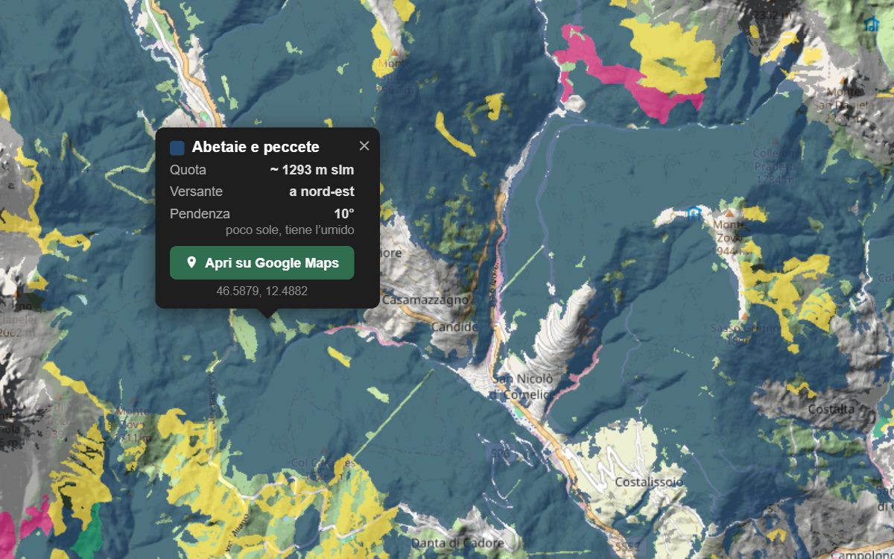

‹ Mappa forestale d'Italia › Abetaie e peccete
Mappa delle abetaie e peccete d'Italia
Dove sono i boschi di abete bianco e abete rosso in Italia, regione per regione e valle per valle, e a che quota stanno. Li vedi in blu sulla mappa delle carte forestali ufficiali, anche dal telefono: tocchi un punto e sai che bosco è, a che quota e su quale versante.

Comelico, intorno a Casamazzagno: abetaie e peccete in blu su tutti e due i versanti, i lariceti in giallo più in alto. Un tocco su una pecceta: 1.293 metri, versante a nord-est. Apri la mappa e vai dove vuoi.
Dove sono: regione per regione
Gli ettari di abetaie e peccete di ogni regione, misurati sulla nostra mappa. Accanto, quanto pesano sul bosco della regione.
A che quota
Quanti ettari di abetaie e peccete ci sono a ogni altitudine, a fasce di 100 metri, in tutta Italia. Il 75% sta fra 1.100 e 1.800 metri, e la quota di mezzo è 1.450 m.
In colore la fascia fra 1.100 e 1.800 m: ci sta il 75% di abetaie e peccete.
⛰ Mappa filtrata: 1.100–1.800 mSulla mappa le due frecce del filtro di altitudine si spostano come vuoi: la fascia del tasto è solo il punto di partenza.
I funghi delle abetaie e peccete
I funghi che si cercano sotto gli abeti, col nome comune, gli altri nomi con cui li chiamano e il nome scientifico.
- Porcino o porcino d'autunno · Boletus edulis
Il porcino di montagna: nelle peccete e nelle abetaie, soprattutto da agosto a ottobre. - Finferlo o gallinaccio, galletto · Cantharellus cibarius
Giallo uovo, con pieghe al posto delle lamelle. A gruppi nel muschio, dall'estate all'autunno. - Finferla o gallinaccio grigio · Craterellus lutescens
Piccola, gambo giallo e cappello bruno. A gruppi fitti nei boschi umidi di abete, in autunno.
Per sapere quando andare conta la pioggia: la trovi, località per località, nelle nostre piogge per funghi.
Le valli con più abetaie e peccete
Le zone dove abetaie e peccete pesano di più sul bosco. Ogni zona ha la sua pagina con la mappa e i paesi intorno.
- Comelico · Veneto
abetaie e peccete 80% del bosco · bosco sul 78% del territorio - Val Pesarina · Friuli Venezia Giulia
abetaie e peccete 64% del bosco · bosco sul 74% del territorio - Val di Tires · Alto Adige
abetaie e peccete 52% del bosco · bosco sul 69% del territorio - Giudicarie · Trentino
abetaie e peccete 49% del bosco · bosco sul 76% del territorio - Val Chiarsò · Friuli Venezia Giulia
abetaie e peccete 48% del bosco · bosco sul 65% del territorio - Altopiano del Tesino · Trentino
abetaie e peccete 46% del bosco · bosco sul 73% del territorio - Val Sedornia · Lombardia
abetaie e peccete 45% del bosco · bosco sul 58% del territorio - Val Terragnolo · Trentino
abetaie e peccete 44% del bosco · bosco sul 81% del territorio - Val di Non · Trentino
abetaie e peccete 44% del bosco · bosco sul 61% del territorio - Valle del But · Friuli Venezia Giulia
abetaie e peccete 44% del bosco · bosco sul 65% del territorio
I paesi in mezzo agli abeti
Dove entro 3 km dal paese il bosco è quasi tutto abetaie e peccete, dal più basso al più alto. Il nome porta alla pagina con la pioggia per i funghi.
- 803 m
- 895 m
- 970 m
- 1000 m
- 1126 m
- 1142 m
- 1151 m
- 1205 m
- 1232 m
- 1327 m
- 1342 m
- 1368 m
Ogni regione ha la sua carta forestale, con le sue sigle: noi le raggruppiamo negli undici colori della legenda.
A chi serve
- 🫐Mirtilli
Crescono sotto peccete e lariceti, nelle radure e ai margini, da luglio a settembre. - 🥾Escursioni
Prima di partire guardi che bosco attraversa il sentiero, a che quota e su quale versante: tocchi un punto sulla mappa e lo apri su Google Maps. - 🌲Montagna d'estate
Le peccete tengono il fresco e l'umido anche in agosto: sui versanti a nord sono le prime a dare funghi dopo un temporale.
Gli altri boschi
E la pioggia? Sulla stessa mappa
La mappa forestale sta dentro la nostra mappa pluviometrica: scegli un periodo e vedi dove ha piovuto, poi con ⇆ Confronta con piogge la metti accanto alle abetaie.
💧 Apri la mappa della pioggia: ultimi 20 giorni